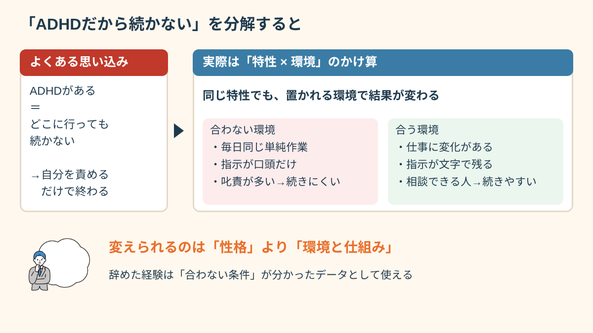
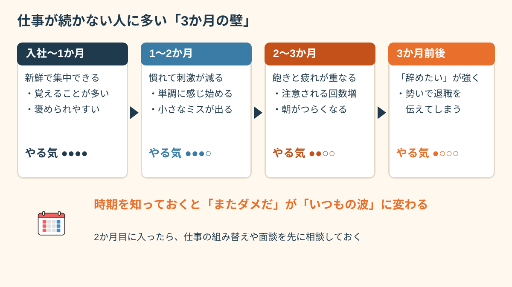
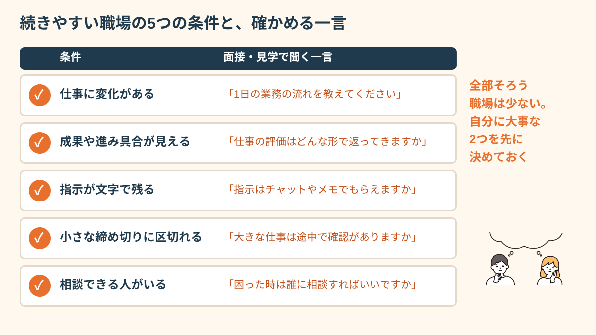
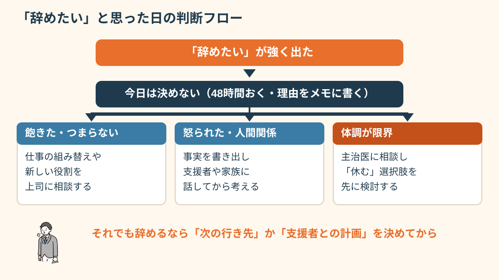
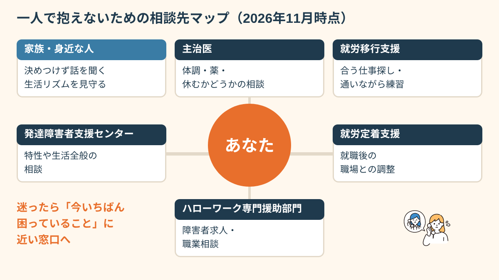

先にお伝えしたいのは、続かないのはあなたの根性や性格の問題ではなく、特性と環境の組み合わせが合っていないことが多い、ということです。そして「辞めたい」が出てくる時期や理由には、ある程度の型があります。この記事では、続かない理由の分解、よくある3つのパターンと「3か月の壁」、続きやすい職場の条件と面接で確かめる一言、飽きへの対処、「辞めたい」と思った日の判断の手順、家族や支援者ができること、相談先までを、就労支援の現場で使っている形でまとめます。なお、仕事のミスや忘れ物そのものの対策はADHDで仕事のミスが多い人へで詳しく扱っています。
「ADHDだから続かない」は半分だけ本当。続かない理由を分解する
ADHDの特性（不注意・多動性・衝動性）は、たしかに仕事を続けることを難しくする要因になりえます。新しい刺激には強く反応できる一方で、同じ作業が続くと注意を保つのに大きな力が要る。思ったことをすぐ行動に移せる一方で、「もう無理だ」と感じた瞬間に退職を口にしてしまう。こうした特性が、「長続きしない」という結果につながることは実際にあります。
ただ、「ADHDがあるから、どこに行っても続かない」は正確ではありません。相談を受けていると、同じADHDのある方でも、変化の多い営業や現場の仕事で何年も続けている人がいれば、毎日同じ入力作業で2か月目に限界を感じた人もいます。逆に、ルーティンの仕事でも「手順が紙で決まっていて、終わったら次の作業に移れる」職場では長く続いている、というケースもあります。続くかどうかを左右しているのは、特性そのものより、特性と職場環境の組み合わせであることが多いのです。
「続かない」をもう少し細かく分けると、次の3つが重なっていることがよくあります。
- 仕事の中身との相性：単調さ、刺激の少なさ、成果の見えにくさ。「何のためにやっているか分からない作業」が続くと、注意を保つための燃料が早く尽きます。
- 職場の進め方との相性：指示が口頭だけ、締め切りがあいまい、確認の機会がない。ミスが増え、注意される回数が増え、居づらさにつながります。
- 体と気持ちの消耗：人一倍気を張って働いた疲れ、睡眠リズムの乱れ、「また失敗するかも」という不安。限界が近づくと、衝動的な決断が出やすくなります。

こう分けてみると、「自分を変える」以外にも打てる手が見えてきます。仕事の中身を選ぶ、職場の進め方を少し変えてもらう、消耗をためない働き方にする。変えられるのは「性格」より「環境と仕組み」のほうが多いというのが、この記事全体の出発点です。
よくある「続かない」3つのパターンと「3か月の壁」
仕事が続かなかった経験を一緒に振り返っていくと、辞め方にはいくつかの型があります。どれか一つにきれいに当てはまるというより、2つ3つが重なっていることがほとんどです。自分がどの型に近いかを知っておくと、次の職場で何に気をつければいいかが具体的になります。
パターン1：飽きて、気持ちが離れていく
入社直後は覚えることが多く、新しい人や仕事に刺激を感じて集中できます。ところが仕事に慣れて手順が決まってくると、急に「つまらない」「この先もずっとこれか」と感じるようになります。やる気が落ちたことに自分でも戸惑い、「自分は飽きっぽい人間だ」と責めてしまう方が多いパターンです。
パターン2：注意される回数が増えて、居づらくなる
慣れてきたころは、周りの期待も「もう一人でできるよね」に変わる時期です。そこでうっかりミスや締め切りの抜けが続くと、注意される回数が増え、職場に行くのが怖くなっていきます。本人は誰よりも気をつけているのに結果が出ず、自信がすり減っていきます。
パターン3：がんばりすぎて、ある日ぷつんと切れる
ミスをしないように、人一倍気を張って働き続けるパターンです。最初の数か月は周りからの評価も高いのですが、疲れが積み重なって睡眠が乱れ、ある朝起き上がれなくなる。限界を超えてから一気に「もう辞めます」となるため、本人にも周りにも「突然」に見えます。

3つのパターンに共通しているのが、入社から2〜3か月ごろに「辞めたい」が強くなることです。新鮮さが薄れる時期、周りの期待が上がる時期、疲れがたまる時期が、ちょうどこのころに重なるためです。試用期間の終わりと重なることも多く、「本採用になる前に辞めてしまおう」という気持ちが背中を押すこともあります。
この「3か月の壁」が来ると分かっていれば、「またダメだった」ではなく「いつもの波が来た」と受け止めやすくなります。2か月目に入ったら、仕事の組み替えや面談を先にお願いしておく、休みを1日入れておく、といった準備もできます。壁そのものをなくすのは難しくても、壁の前に手すりを置いておくことはできるのです。
「振り返ったら、5回の転職のうち4回が入社3か月前後でした。毎回『今度こそ自分に合わなかっただけ』と思っていたけど、時期まで同じだと気づいてからは見え方が変わりました。今の職場では2か月目に『そろそろ新しい作業も覚えたいです』と自分から言って、担当を一つ増やしてもらいました。それで乗り切れた感じがします。」
続きやすい職場の5つの条件と、面接で確かめる一言
ADHDのある方が長く働けている職場には、共通する条件があります。ここでは5つにまとめますが、全部そろう職場はそう多くありません。自分にとって特に大事な2つを先に決めておき、そこだけは面接や見学で必ず確かめる、という使い方がおすすめです。
- ①仕事に変化がある：一日中同じ作業より、午前と午後で作業が変わる、外回りと事務がある、といった変化があるほうが飽きにくくなります。面接では「1日の業務の流れを教えてください」と聞くと、変化の量が具体的に分かります。
- ②成果や進み具合が見える：処理件数、完成した物、お客さんの反応など、やったことが目に見える仕事は、注意を保つ燃料になります。「仕事の評価はどんな形で返ってきますか」と聞いてみてください。
- ③指示が文字で残る：チャットやメモ、マニュアルで指示が残る職場は、聞き漏らしによるミスが減り、注意される回数も減ります。「指示はチャットやメモでもいただけますか」と確認しておくと安心です。
- ④小さな締め切りに区切れる：「月末までに」より「水曜に途中経過、金曜に提出」のように区切りがあるほうが、先延ばしを防げます。「大きな仕事は途中で確認の機会がありますか」と聞けます。
- ⑤困ったときに相談できる人がいる：直属の上司以外にも相談相手がいる、定期的な面談がある職場は、問題が小さいうちに手を打てます。「困ったときは誰に相談すればいいですか」と聞くと、職場の雰囲気も伝わってきます。

面接でこうした質問をするのは、わがままではありません。会社にとっても、入ってすぐ辞められるより、合うかどうかを確かめてから来てもらうほうがありがたいものです。聞きにくい場合は、職場見学や実習（就労移行支援などを通じて行えることがあります）で実際の様子を見るのも一つの方法です。
「どんな仕事が向いているか」の職種の話は、ADHDに向いている仕事の傾向と環境の条件でも整理しています。職種より条件、という考え方は同じです。仕事選びの軸そのものを整理したい方は、転職の軸が分からない障害のある方へもあわせてどうぞ。
「飽きる」ことへの現実的な対処。なくすより「飽きた後」を決めておく
ADHDのある方の「飽き」は、気合いでなくせるものではありません。新しい刺激に反応しやすい脳の働き方と関係していると考えられており、どんなに好きな仕事でも、慣れれば刺激は薄れていきます。だからこそ現実的なのは、飽きをなくそうとすることより、「飽きてきたときにやること」を先に決めておくことです。
仕事の中に小さな変化をつくる
- 作業の順番を入れ替える：午前は入力、午後は電話対応、のように作業を交互にすると、同じ作業が続く時間を短くできます。上司に「同じ量をこなすので、順番を自分で組んでもいいですか」と聞くのも一つの手です。
- 小さな目標や記録をつける：「今日は昨日より10分早く終える」「1日の処理件数を記録する」など、自分で小さなゲームをつくると、単調な作業にも変化が生まれます。
- 場所や道具を変える：席を移る、BGMを変える、ペンやノートを新しくする。小さなことですが、気分を切り替えるきっかけになります（職場のルールの範囲で）。
役割の変化を「自分から」お願いする
慣れてきたころに、新しい作業や担当を一つ増やしてもらうのも効果的です。ポイントは、飽きて限界になってからではなく、2か月目くらいの余裕があるうちに伝えることです。「今の仕事にも慣れてきたので、次は〇〇も覚えたいです」と前向きな言い方にすると、職場にも受け入れられやすくなります。
飽きを感じたら「早めに伝える相手」をつくっておくことも大切です。上司に言いにくければ、就労定着支援の担当者や、主治医、家族でもかまいません。誰かに一度話すだけで、「辞める」以外の選択肢が見えてくることはよくあります。
「辞めたい」と思った日にやること。勢いで辞めないための判断の手順
ADHDのある方の退職でとても多いのが、「その日の勢いで辞めると言ってしまった」というケースです。上司に強く注意された帰り道、朝どうしても体が動かなかった日、つまらなさが限界に達した午後。衝動性の特性があると、強い気持ちがそのまま行動になりやすく、気づいたときには退職の話が進んでいた、ということが起きます。後から「あと1週間待てば落ち着いていたのに」と振り返る方も少なくありません。
辞めること自体が悪いわけではありません。合わない職場から離れるのは、自分を守る大事な選択です。大切なのは、「辞める」を、強い気持ちが出たその日には決めないことです。そのための手順を、3つのステップにまとめます。
ステップ1：今日は決めない（48時間ルール）
「辞めたい」が強く出た日は、退職を口にしない、退職届を書かない、とあらかじめ自分の中でルールにしておきます。目安は48時間です。そのかわりに、スマホのメモに「辞めたい理由」をそのまま書き出します。きれいな文章にする必要はありません。「〇〇さんに人前で注意された」「毎日同じ作業で頭が動かない」「朝起きられない日が週2回ある」と、事実と気持ちを並べるだけで十分です。
ステップ2：理由を3つに仕分ける
2日たったらメモを見返し、理由がどれに近いかを仕分けます。
- 飽きた・つまらない：仕事の中身の問題です。辞める前に、作業の組み替えや新しい役割を上司に相談する余地があります。
- 怒られた・人間関係がつらい：その出来事が一度きりか、毎日続いているかで判断が変わります。事実を書き出し、支援者や家族など職場の外の人に話してから考えます。
- 体調が限界：眠れない、食べられない、朝起きられない日が続いているなら、退職より先に主治医に相談し、「休む」という選択肢を検討します。休職できる制度があるかどうかも、会社の就業規則で確認しておきましょう。

ステップ3：それでも辞めるなら「次」を決めてから
仕分けて相談しても気持ちが変わらないなら、辞めるのも立派な判断です。そのときは、できれば「次の行き先」か「支援者と立てた計画」が決まってから退職を伝えるようにします。収入が途切れる期間を短くできますし、次の職場で同じことを繰り返さないための準備もできます。体調が限界で今すぐ離れる必要がある場合は、この順番にこだわらず、主治医と相談しながら休むことを優先してください。
「また辞めた」を次の職場選びに変える。振り返りの3行
これまで何度か仕事が続かなかった経験は、「自分はダメだ」という証拠ではありません。どんな環境が合わないかを、身をもって確かめてきたデータです。ただ、データは整理しないと使えません。辞めた理由を「人間関係」「なんとなく」とひとまとめにしたままだと、次の職場でも同じ形で続かなくなりがちです。
おすすめしているのは、これまでの職場ごとに、次の3行を書き出すことです。
- 1行目 何があったか（事実）：「入社3か月目、データ入力が中心になってからミスが増え、毎日注意された」
- 2行目 何がきつかったか（理由）：「同じ作業が続くと注意が保てない。口頭で修正点を言われても覚えきれなかった」
- 3行目 何があれば続けられたか（条件）：「作業が交互にある仕事。修正点を文字でもらえる職場」
3社分ほど書き出すと、3行目に同じ言葉が何度も出てくることに気づくはずです。それが、あなたにとっての「続けるための条件」です。次の求人を見るときや面接で質問するときは、この条件を軸にします。転職回数そのものの伝え方や、繰り返しのパターンを見つける方法は、転職を繰り返して続かない。原因の見つけ方と次の選び方で詳しく解説しています。
「支援員さんと一緒に、前の3つの職場について『何があれば続けられたか』を書いたら、3つとも『途中で確認してくれる人がいれば』でした。自分ではずっと飽きっぽいせいだと思っていたので、意外でした。今は週1回、上司と10分だけ進み具合を確認する時間をもらっていて、1年半続いています。」
支援機関では、「何度か辞めてしまった経験がある」という方は珍しくありません。むしろ、過去の経験を具体的に話してもらえるほど、合う職場を一緒に考えやすくなります。恥ずかしいと感じる必要はまったくありません。
家族・支援者ができることと、一人で抱えないための相談先（2026年11月時点）
仕事が続かないことに悩んでいるのは、本人だけではありません。「また辞めてしまった」と聞いたとき、家族もどう声をかければいいか迷います。ここでは、家族や身近な人ができることと、本人と一緒に使える相談先をまとめます。
家族・身近な人ができること
- 「なんで続かないの」と責めない：本人が一番落ち込んでいます。理由を問い詰めるより、「話したくなったら聞くよ」と伝えるほうが、結果的に本音を話してもらいやすくなります。
- 決めつけずに、事実を一緒に整理する：「飽きっぽいから」と性格のせいにせず、「どんなときにつらかった？」と場面を一緒に振り返ります。前の章の「3行の振り返り」を一緒に書くのも一つの方法です。
- 生活リズムの変化に気づく：眠れていない、朝起きられない、食事が減っているなど、体調の変化は本人より周りのほうが先に気づくことがあります。気づいたら、責めずに「最近疲れてない？」と声をかけてください。
- 家族だけで抱えない：家族が支えきれないときは、家族自身が相談先を使ってかまいません。発達障害者支援センターなどでは、家族からの相談を受け付けていることがあります。
本人と一緒に使える相談先
- 主治医：体調や薬、休むかどうかの相談。仕事の場面で困ったことをメモして持っていくと、具体的に相談しやすくなります。
- 発達障害者支援センター：各都道府県・政令指定都市などに設置されている、発達障害のある方とその家族のための相談窓口です。特性のことや生活全般について相談できます。
- 就労移行支援：一般企業での就職を目指す方が、通いながら仕事の練習や職場探しをするサービスです。自分に合う条件を整理したり、職場実習で実際の様子を確かめたりできます。利用には自治体の手続きが必要です。
- 就労定着支援：就労移行支援などを経て就職した方が、職場で困ったときに支援員が間に入って調整してくれるサービスです。詳しくは就職後に困ったら就労定着支援をご覧ください。
- ハローワークの専門援助部門：障害のある方向けの求人紹介や職業相談の窓口です。障害者手帳がなくても相談できる場合があります。

制度の名前や利用条件、費用は自治体や時期によって変わることがあります。ここに書いたのは2026年11月時点の一般的な内容なので、実際に使うときはお住まいの市区町村の障害福祉の窓口や、各機関に確認してください。どこに相談すればいいか分からない場合は、「今いちばん困っていること」に一番近い窓口に連絡すれば、必要に応じて別の窓口につないでもらえます。
まとめ
- 「ADHDだから続かない」は半分だけ本当。続くかどうかは、特性と環境の組み合わせで大きく変わる
- 辞めたくなる時期には型があり、入社2〜3か月ごろの「3か月の壁」に気をつける
- 続きやすい職場の条件のうち、自分に大事な2つを決めて、面接で一言確かめる
- 飽きはなくすより、「飽きた後にやること」と「早めに伝える相手」を決めておく
- 「辞めたい」が強く出た日には決めず、48時間おいて理由を仕分ける
- 過去の退職は「何があれば続けられたか」の3行で、次の職場選びのデータに変える